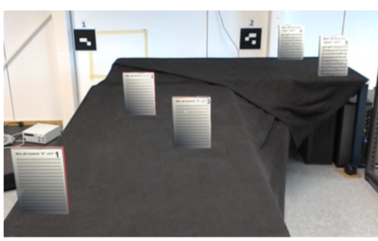

Evaluation of Gaze Depth Estimation from Eye Tracking in Augmented Reality

Venue. ETRA (2020)
Authors. Seyda Öney, Nils Rodrigues, Michael Becher, Guido Reina, Thomas Ertl, Michael Sedlmair, Daniel Weiskopf
Abstract. Gaze tracking in 3D has the potential to improve interaction with objects and visualizations in augmented reality. However, previous research showed that subjective perception of distance varies between real and virtual surroundings. We wanted to determine whether objectively measured 3D gaze depth through eye tracking also exhibits differences between entirely real and augmented environments. To this end, we conducted an experiment (N = 25) in which we used Microsoft HoloLens with a binocular eye tracking add-on from Pupil Labs. Participants performed a task that required them to look at stationary real and virtual objects while wearing a HoloLens device. We were not able to find significant differences in the gaze depth measured by eye tracking. Finally, we discuss our findings and their implications for gaze interaction in immersive analytics, and the quality of the collected gaze data.